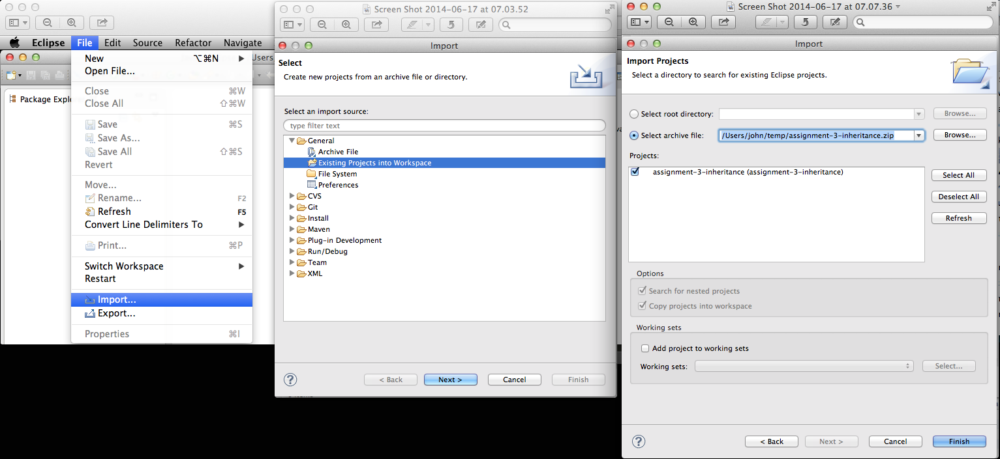
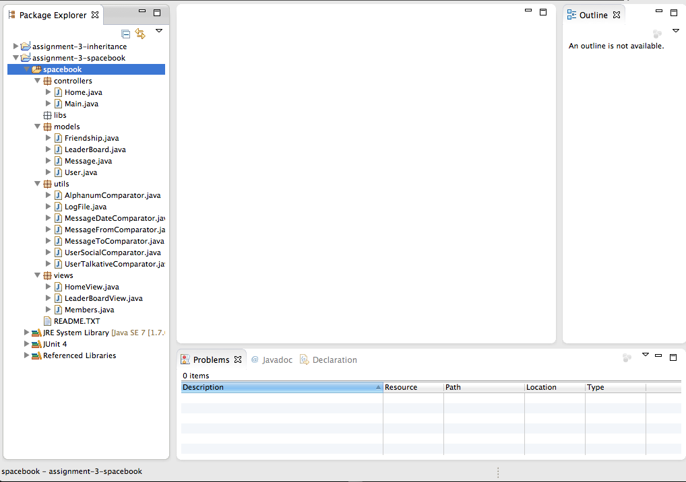
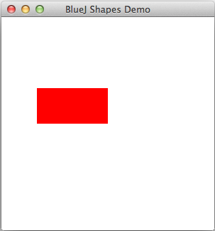
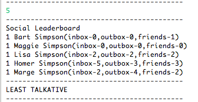

Readme
Assignment 3
This assignment draws on some or all of the material presented during the semester in particular:
- 8 Designing Classes (Spacebook)
- 11 Inheritance
Setup and Guidelines
Recall the recommended directory structure:

Download the archive files to a temporary directory.
Here are the steps to set up the first project (inheritance):
- Launch Eclipse
-
Create a new workspace workspaceBlueJ/assignments/assignments-3 or select it if already in existence.

-
Import the inheritance project into the workspace.
- Ensure you click the button Select archive file in the Import window
- Do not click Select root directory.

-
The project should appear in the Package Explorer pane.
- Click the arrow to expand and view the files in the package shapes.

Repeat for the spacebook project.

You can quickly obtain a list of the tasks for the spacebook project (only) by selecting the Eclipse menu commands: Window->Show View->Tasks. This will reveal a list of TODOs in the Tasks window.
You should make frequent use of the Eclipse debugger in developing and checking your code. Help will be provided where needed on this during the assignment studio sessions.
When you have completed the assignment, export both projects to a folder (assignments-3-solutions), compress the folder and submit a single archive file named assignments-3-solutions.zip.
- Some screen shots follow that may help with the steps required to export the projects:


Q1 Inheritance [40/100]
Task 1
Refactor the Rectangle class in the shapes package as follows:
- Adopt a similar approach to that employed in the cases of Circle and Triangle.
- Extend the class from Shapes
- Delete fields from Rectangle that are already in Shapes.
- Do not change the fields in Shapes.
- Do not add or delete fields in Shapes.
- The erase method is applicable to all subclasses and so can reside in the superclass.
- It is therefore not necessary to override it in the subclass.
- Add a call to super in both Rectangle constructors.
- Modify the setState method by eliminating all parameters representing fields migrated to the superclass.
- Test by creating a class named TestRectangle in which you:
- write a main method within which you assign attributes as follows:
- dimensions 100 long x 50 high
- initial position at the origin (0,0),
- color red.
- move the rectangle to (50, 100).

Task 2
Refactor the TestShapes class as follows:
- Instantiate 4 Rectangle objects
- Choose arguments so that the Rectangle objects display in a cascade style
- Ensure the objects do not impinge on the Triangle and Circle objects
- Aim for a display similar to Figure 2.

Task 3
Develop a class Pentagon.
Use Shapes as a superclass.
Following is skeleton code for the class:
import java.awt.Polygon;
/**
* @file Pentagon.java
* @brief This class describes a pentagon and has behaviour to display, resize and move objects
*
* @author jfitzgerald 2014-05-23
*
*/
public class Pentagon
{
private int radius;//radius of circumscribing circle
public Pentagon()
{
super(...);
this.radius = 50;
}
public Pentagon(int radius, int xPosition, int yPosition, String color)
{
super(...);
...
}
public void changeSize(int scale)
{
...
...
...
}
void draw()
{
if(isVisible) {
//Ref: http://mathworld.wolfram.com/Pentagon.html
double dc1 = 0.25*(Math.sqrt(5) - 1);
double dc2 = 0.25*(Math.sqrt(5) + 1);
double ds1 = 0.25*(Math.sqrt(10 + 2*Math.sqrt(5)));
double ds2 = 0.25*(Math.sqrt(10 - 2*Math.sqrt(5)));//length of pentagon side is 2*ds2
int c1 = -(int)(radius*dc1);//radius of circle that circumscribes pentagon
int c2 = -(int)(radius*dc2);
int s1 = (int)(radius*ds1);
int s2 = (int)(radius*ds2);
Canvas canvas = Canvas.getCanvas();
int[] xpoints = { xPosition,
xPosition + s1,
xPosition + s2,
xPosition - s2,
xPosition - s1
};
int[] ypoints = { yPosition - radius,
yPosition + c1,
yPosition - c2,
yPosition - c2,
yPosition + c1
};
canvas.draw(this, color, new Polygon(xpoints, ypoints, 5));
canvas.wait(10);
}
}
}
Write a class TestPentagon to display a series of Pentagon objects as depicted in Figure 5.

Here is the TestPentagon skeleton:
public class TestPentagon
{
public static void main(String[] args)
{
ArrayList<Shapes> shapes = new ArrayList<>();
shapes.add(new Pentagon(30, 60, 30, "red"));
shapes.add(new Pentagon(... "blue"));
shapes.add(new Pentagon(... "green"));
shapes.add(new Pentagon(... "black"));
for(Shapes shape : shapes)
{
...
}
}
}
Task 4
Change the inheritance hierarchy of shapes to that shown in Figure 6:
- Create an Ellipse class
- Derive Ellipse directly from Shapes
- Change Circle so that it is derived directly from Ellipse.

Hint: you have already encountered an Ellipse class in Assignment 2.
Q2 Spacebook[60/100]
This Java application, spacebook, when developed by you, will share much of the functionality of the Home and LeaderBoard modules in the Play application deployed here.
Use the project provided (in skeleton form) in the download assignment-3-spacebook.zip.
The sender of the messages simulates the logged-in user.
For example, in all of the sample code provided, Homer is the logged-in user.
Two scenarios (stories) are fully developed in the skeleton code provided.
You are asked to develop a further four scenarios (tasks) as described below.
Task 1
Sort the logged-in user's inbox by reference to the names of the message senders.
- This requires you to complete the code along the execution path beginning with the invocation of Main home_byUser in the compilation unit (file) Main.java.
- When completed, running Main and inputting 1 should run the module and display the output as depicted in Figure 3.

Task 2
Sort the logged-in user's conversations with all its friends.
- A conversation comprises a series of messages to and fro between a sender and receiver.
- Example: the logged-in user, Homer, sends a message to Marge, Marge replies, and so on.
- This requires you to complete the code along the execution path beginning with the invocation of Main.home_byConversation in the compilation unit (file) Main.java.
- When completed, running Main and inputting 2 should run the module and display the output as depicted in Figure 4.
Task 3
Sort the Social Leaderboard by reference to the most talkative users.
- Most talkative is defined as having the most number of messages in one's outbox.
- This requires you to complete the code along the execution path beginning with the invocation of Main leaderBoard_talkative in the compilation unit (file) Main.java.
- When completed, running Main and inputting 4 should run the module and display the output as depicted in Figure 5.

Task 4
Sort the Social Leaderboard by reference to the least talkative users.
- Least talkative is defined as having the least number of messages in one's outbox.
- This requires you to complete the code along the execution path beginning with the invocation of Main leaderBoard_leastTalkative in the compilation unit (file) Main.java.
- When completed, running Main and inputting 5 should run the module and display the output as depicted in Figure 5.
